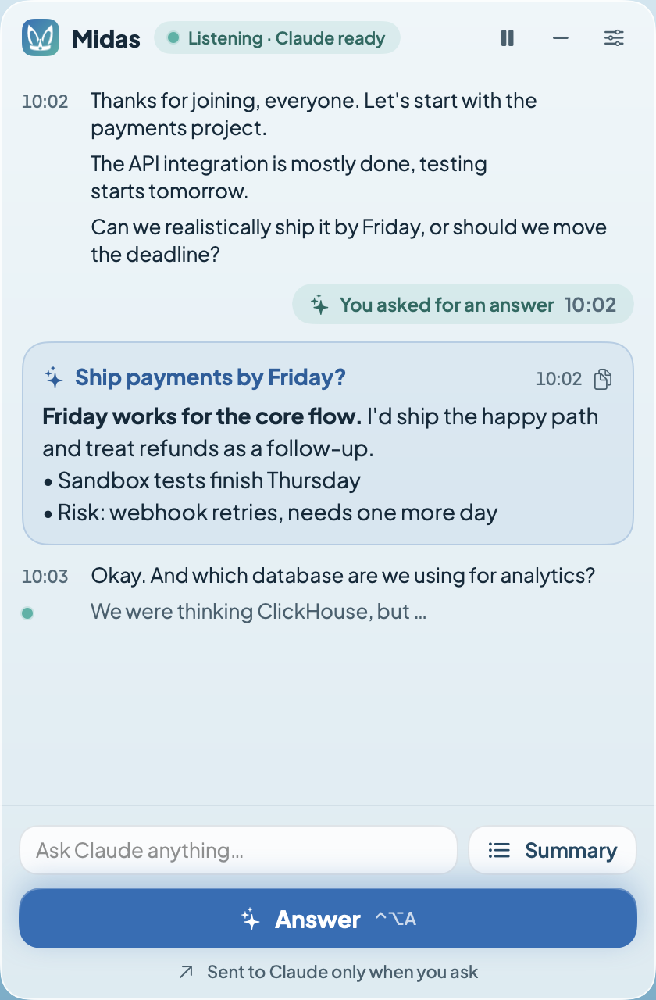
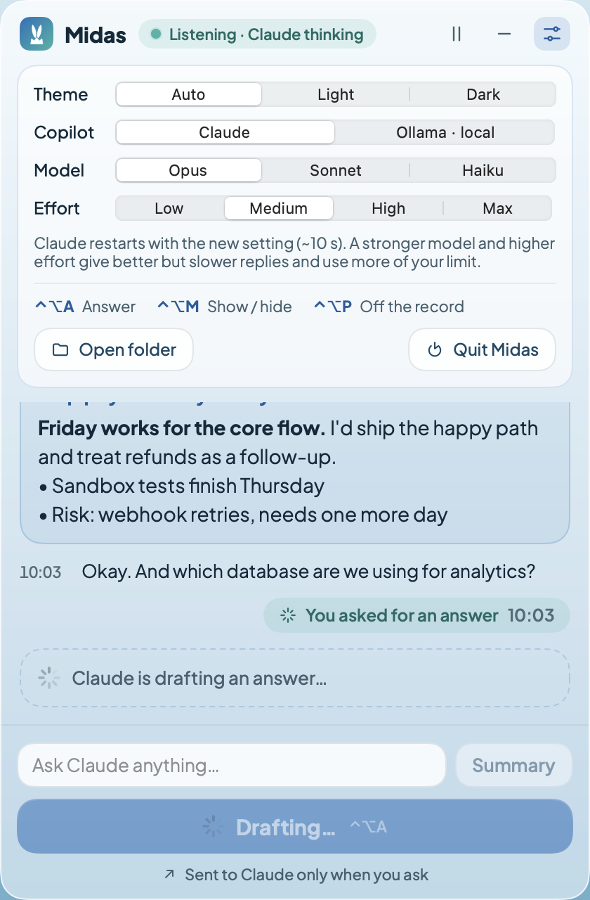
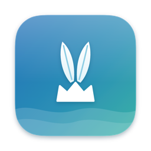

No meeting bot
Nobody sees "Notetaker joined". Midas captures system audio with macOS's Core Audio process tap, without a virtual audio driver.
Midas transcribes Zoom, Google Meet and Microsoft Teams on your Mac with local Whisper, and Claude drafts what to say next in a panel screen sharing can't see. No bot joins the call.

An AI meeting assistant that stays on your side of the screen: private transcription, answers when you ask, and nothing for the other participants to notice.
Nobody sees "Notetaker joined". Midas captures system audio with macOS's Core Audio process tap, without a virtual audio driver.
Whisper large-v3-turbo runs locally on Apple Silicon with MLX. Audio never leaves your Mac; only text goes to Claude, and only when you ask.
The panel is excluded from screen capture, has no Dock icon, stays out of ⌘⇥ and never takes focus from the meeting app.
Press Answer (⌃⌥A) and Claude replies to the latest question in seconds. Summary lists the decisions and action items so far.
What was said, where you asked, and Claude's reply, in a single scroll, with the sentence being spoken shown live.
About 4k tokens of context per call and no calls until you press. A 30-minute meeting on Opus uses roughly 0.1% of a Max plan's 5-hour limit.
A small Swift helper taps the Mac's audio output with Core Audio and streams 16 kHz audio to the Midas daemon. The meeting app doesn't change.
Voice activity detection cuts the audio into sentences, and Whisper transcribes each one on device, about a second after the speaker pauses.
Claude Code, running the /midas loop, gets the conversation over MCP and posts a short reply you can say out loud to the panel.
System audio ──► midas-audio (Swift, Core Audio tap)
│
▼
Midas daemon (Python)
VAD → Whisper (local) → sessions/*.md
│
┌────────┴─────────┐
▼ ▼
midas-overlay MCP bridge ◄──► Claude Code
(hidden panel) (stdio) (/midas loop)
| Feature | Midas | Meeting bots | Cloud note-takers |
|---|---|---|---|
| Joins the call as a participant | No | Yes | Varies |
| Where audio is transcribed | On your Mac | Vendor's cloud | Vendor's cloud |
| Live answers during the call | Yes, on demand | Some | Some |
| Panel hidden from screen sharing | Yes | — | — |
| Open source, self-hosted | Yes (MIT) | Usually not | Usually not |
Looking for an open-source alternative to tools like Cluely or Granola? Midas gives live answers in an overlay that's hidden from screen sharing and keeps meeting notes without a bot, with transcription running locally and Claude as the model.
Setup builds the Swift parts, downloads the Whisper model (~1.6 GB) and installs Midas.app in your Applications folder.
$ git clone https://github.com/onurkagan/midas-meeting-copilot.git
$ cd midas-meeting-copilot
$ ./midas setup
$ ./midas installMidas never joins the meeting: there's no bot, no extra participant and no virtual microphone or speaker. The panel asks macOS to keep it out of screen capture. Whether a capture tool respects that depends on how it records the screen, so do a test share before an important meeting; sharing a single window instead of the whole screen is the safest option.
No. Audio is transcribed in memory on your Mac and isn't saved or uploaded. The text transcript is saved locally, and text is sent to Claude only when you press Answer or Summary (or continuously if you turn on automatic answers).
Turkish and English by default. Whisper supports about 100 languages, and you choose them in config.toml.
No. Midas captures system audio only, so Claude hears the other participants. Speakers aren't told apart.
An Apple Silicon Mac (M1 or later) with macOS 14.4 or later, and Claude Code signed in to your Claude account. It doesn't run on Intel Macs, Windows or Linux: it relies on MLX and on Core Audio process taps, added in macOS 14.4.
By our measurements, a 30-minute meeting on Opus uses about 0.1% of a Max plan's 5-hour limit, because Claude makes a single, small call each time you press Answer.
Yes. Midas is open source under the MIT license. Answers use your own Claude account through Claude Code.
Rules on recording and transcribing conversations differ by country and state, and some require everyone's consent. Tell the other participants when your situation calls for it.

In the myth, King Midas had donkey ears that heard everything. Yours hear the whole meeting, and keep it to themselves.